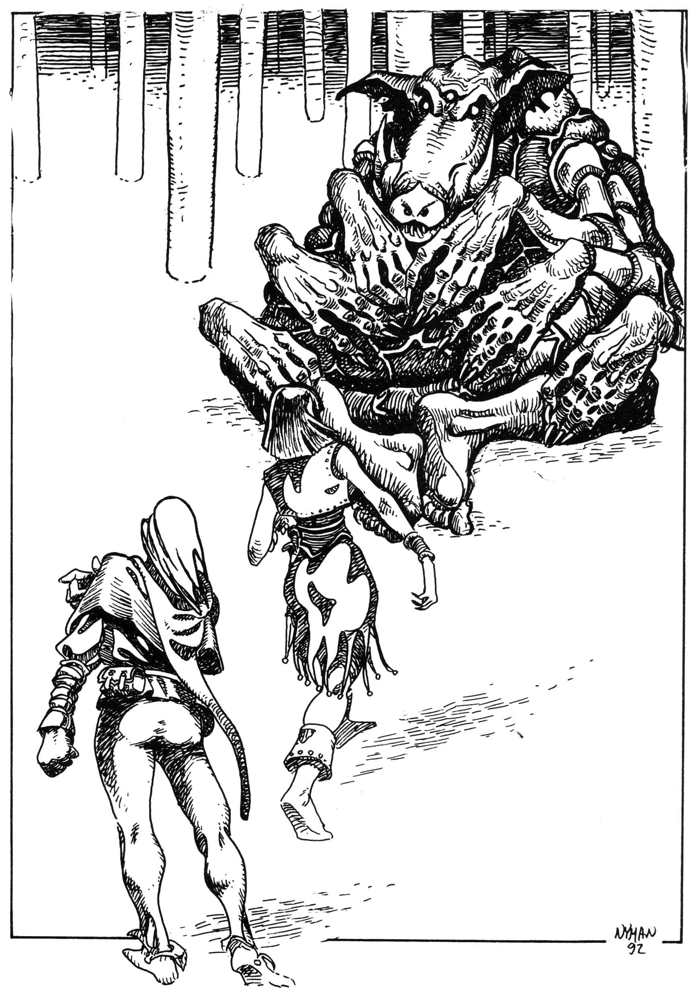

01. Inledning
Bortom världen
Ridåer av mångfärgat ljus spelar genom de gigantiska grå hallarna. Två ensamma varelser vandrar som insekter över labyrintens ändlösa golv. Hundratals meter ovanför dem vilar takvalv på pelare så stora att man måste gå tvåhundra steg för att runda en av dem. Inget rör sig utom de två vandrarna. Inga ljud hörs utom deras svaga röster långt därnere.
”Det går för sakta”, klagar Manghalde. ”Jag kan en ritual som tar oss fram tusen gånger snabbare.”
Alvkvinnan Melealina ler överseende vid hans sida trots att hon förklarat situationen flera gånger.
”Vad hjälper hastighet om jag inte hör rösten som leder oss rätt?” svarar hon. ”Vi är bortom världen, och bortom alla andra världar där tiden saknar betydelse, min vän. Vår resa tar bara ett ögonblick. Sysselsätt din rastlösa själ med musik eller meditation.”
Trollkarlen muttrar och ser mot sina fötter, men kan inte urskilja dem eftersom de vadar i dimma. Han är rastlös men inte trött. För färden har han manifesterat sig i en ung kropp. Den räcker längre än hans tålamod. Det bästa med resor i bortomvärldarna är att slippa sin egen plågade kropp för en stund. Alvkvinnan ser däremot ut som hon alltid har gjort — outtröttlig och oföränderlig.
De närmar sig ännu en sidopassage och Melealina sluter ögonen för att höra rösten som ropar henne till sig. Manghalde uppfattar inget alls men har vett att tiga.
”Jag misstror tystnaden. Vem har byggt dessa meningslösa katakomber?” frågar han när de åter kommit i rörelse.
”Ingen har byggt dem. De skapades av gudarna i sin nuvarande form och utgör själva rymdens struktur på denna plats”, svarar alvkvinnan. ”Kanske övade man skaparkraft i detta tomma utrymme mellan världarna. De gav oss en bro genom kaos. Var tacksam!”
I nästa korsväg står de oväntat framför en jättelik staty, helt mejslad i grön sten. Melealina tvekar och stannar. Statyn sitter fet som en padda, med sina många armar utsträckta och ett ondskefullt flin över nunan.
Manghalde vill gå vidare men hejdas av alvkvinnan.
”Vik undan!”, ropar hon med gäll röst. ”Vi söker passage i det heliga berget Ranz namn! Det här är inte din värld. Gå tillbaka till det mörker som är din hemvist!”
Statyns tre klotrunda ögon vältrar sig i sina hålor och vänds mot vandrarna. Handflatorna höjs mot taket och som bladen på ett träd växer vassa klingor ut mellan fingrarna.
”Jag är Ebharing, världserövraren, den som går dit det behagar honom”, svarar demonen med tre disharmoniska stämmor och reser sig från sina stenkuddar. ”Er färd är över.”
Manghalde har redan påbörjat sin magiska åkallan. En klo, formad av osynlig ektoplasma, sträcker sig från hans tanke in i statyns bröstkorg. Där finner han ett kallt stenhjärta och vrider loss det från fästet. Demonen tystnar för ett ögonblick. Den trekantiga munnen famlar efter ord utan att finna några. Ett mullrande som av en jordbävning hörs innan statyns bröstpansar plötsligt rämnar. Hjärtat faller ut som en tung frukt. Organet arbetar fortfarande och sprider gulgröna kaskader genom dimman, men stenvarelsen står kvar.
”Svag som en människa är den med ett enda hjärta”, flinar han. Hans åtta armars klingor genomborrar trollkarlen med ormens snabbhet och sliter besvärjaren i stycken på ett ögonblick.
Melealina ryggar inför Manghaldes öde och backar, utan att märka det, in genom en närbelägen svart portal. En fruktansvärd stank väcker henne och en fuktig värme, men innan hon hinner reagera står den gröna statyn framför henne, nedsölad av trollkarlens rykande blod.
”Alltför långt har ditt liv varit, alvkona, men nu är det likväl till ända. Min broder Sheagal blir tillfreds!” Stenvarelsen tar steget som skiljer dem. Då rasar den svarta portalen ner som en ridå mellan Melealina och demonen. Hon kan höra varelsen vråla av besvikelse där utanför, men snart är mörkret, värmen och stanken runt henne allt som finns.
Är hon död? Alla riktningar upphör att existera. Fingrar eller tentakler omsluter henne och för henne allt längre in i en okänd passage. Snart hör hon hur väggarna talar svagt till henne och sjunker utmattad in i ett obegripligt töcken...

Resumé från Svavelvinter och Oraklets fyra ögon
Trakoriska riket ockuperade år 595 eO den ogästvänliga ön Marjura långt uppe i nordhavet. Målet var att få kontroll över det värdefulla svavel som kunde utvinnas ur öns svavel träsk.
På Marjura fanns vid den tiden en nekromantikersekt som kallade sig shaguliter efter grundaren Shagul, själv död sedan femtio år (trodde alla). I Svavelvinter reste äventyrarna till Marjura för att bekämpa Shagulitersekten. Detta inträffade runt årsskiftet 610-611 eO. Under äventyren på ön väcktes Ottar, kung av det uråldriga kungadömet Cruri, ur sin åttahundraåriga sömn. Ottars här av levande döda översvämmade ön och drev bort alla levande varelser. Innan dess hade emellertid äventyrarna en uppgörelse med Shagulitermagikerna och sänkte sektens tempel i lavan det vilade på. När allt borde varit över, steg Shagul själv fram ur sin grav, mördade genom förräderi sina sista lärjungar och berättade för rollpersonerna att allt som hittills hänt i själva verket var planerat av honom. Tillsammans med kung Ottar och dennes mäktiga svärd Ebharing kunde han nu gå vidare i sitt maktspel...
Äventyrarna flydde snopna tillbaka till Trakorien. Kanske svor de att aldrig mer ägna Marjura en tanke. Men så en dag dyker en munk upp och varnar för att Shagul vill döda dem. Trollkarlen har lejt lönnmördarligan RhabdoRana för att spåra upp och avliva vissa personer som var på Marjura när kung Ottar vaknade. Sällskapet undslipper i sista stund ett attentat och flyr till munkarna på det heliga berget Ranz. Ranzinernas ledare berättar för dem att den femte konfluxen närmar sig, en ödespunkt i tid och rum. Shagul tänker utnyttja dess kraft för sina egna syften och mördar Trakoriens astrologer för att hålla konfluxen hemlig. Berget Ranz har efter hundratals år just fullbordat sin profetia Vox Ranzina. Profetian talar om Oraklets fyra ögon, som måste räddas undan den slemme nekromantikern. Sällskapet anmäler sig givetvis mangrant för uppdraget.
Vox Ranzina förutspår därtill att Shagul själv ska dödas av någon som sett hans sanna ansikte. Trollkarlen vill mörda äventyrarna därför att han visade sig för dem när han steg ur graven.
I kamp med RhabdoRanas mördare lyckas sällskapet rädda ett eller flera av de fyra ögonen:
Det blå ögat
Shagul kan tillverka funktionsdugliga kopior av sig själv, s.k. kloner. Det blå ögat visar sig vara en piratklon av Shagul som hindrar honom från att göra fler kopior. Piratklonen har odlats fram av Manghalde, tidigare Shaguls lärjunge Gobrugda, som överlevde trollkarlens förräderi. Äventyrarna träffar Manghalde i Skuggornas träsk.
Det röda ögat
En matematiker vid namn Nastigast i Björkebeningarnas land på västra Palamux.
Det vita ögat
En albinofärgad vargkvinna, en sierska i Wulferveden på Trinsmyra. Hon har tagits tillfånga av jägare och sitter i husarrest hos två excentriska samlare på den lilla ön Gatves klippa. Dessvärre har hon spärrats in tillsammans med en dyrkare av den galne guden Remuntra och smittats av vansinnet.
Det gröna ögat
Melealina, en handlingskraftig alvkvinna och animist som tillbringat de senaste åren i Tocmerskogen på Saphyna. Hon fungerar som väktare mellan vår och andra världar och känner genom sina kontakter till Shagul, den femte konfluxen och en hel del annat som hon inte nödvändigtvis berättar för äventyrarna.
Jakten på oraklets fyra ögon kompliceras av att ett större krig bryter ut i Trakorien. Det heliga Kishatet på Palamux har i hemlighet slutit förbund med Trakoriens arvfiende Ransard, med isbarbarer och med rebeller på Trinsmyra. Den oheliga alliansen segrar till en början, men just som Kishatet i triumf ska invadera Paratorna befrias den förbannade ön Stegos ur sitt nästan tvåhundra år gamla mörker. Stegoserna kommer seglande som gudarnas hämnande arm under befäl av sin kung, Arn Dunkelbrink från Lasemos. När kishaterna inser att deras gud vänt sig från dem, faller deras rike samman som ett korthus och kriget kommer av sig. Ett osäkert lugn lägrar sig över öarna...
Vad har hänt sedan?
När jakten på de fyra ögonen var över, reste Melealina till den nyväckta ön Stegos för att erbjuda kungen sina tjänster som siare och rådgivare. I gengäld ville hon ha beskydd för sig och sina vänner mot Shaguls mördare. Denna tanke föreföll vara klok. Varken Shagul eller någon annan kunde ha agenter på ön eftersom den varit isolerad sedan tiden före trollkarlens födelse. Stegosernas säregna yttre skulle dessutom göra det svårt att smussla in förklädda spioner.
Melealina förde med sig såväl Manghalde som de andra överlevande oraklen till Stegos och vann snart Arn Dunkelbrinks förtroende. Rollpersonerna kanske följde med till ön för att undkomma RhabdoRanas mördare. Om de inte fortfarande lever ett skyddat liv där, utan har rest därifrån i egna ärenden, kan de svårligen vistas i Trakorien. Det sista de i så fall har hört från Stegos är att vissa religiösa grupper ogillat alvkvinnans ankomst och hennes inflytande över kungen. Sådan avundsjuka är helt normal i hovkretsar och inget att fästa sig vid för den som alltid ser till att sitta med ryggen mot väggen.
Det har förmodligen gått några månader, tiden spelar mindre roll, och äventyrarna befinner sig antingen på Stegos eller någonstans på västra kontinenten.
Det bör vara närmare vinter år 613-614 eO och spelet kan börja.
Spelarnas förberedelser
Val av startplats
Spelarna kan befinna sig var som helst i Trakorien eller dess grannländer.
Nya rollpersoner
Äventyrare som överlevt Svavelvinter och Oraklets fyra ögon bör vid det här laget vara mycket misstänksamma mot främlingar. Nya rollpersoner skulle knappast släppas in i gruppen om de inte var garanterat pålitliga. Släktingar till kända rollpersoner eller kungatrogna stegosier bör dock kunna accepteras. De nya kan få 50 erfarenhetspoäng extra om SL är på gott humör och bör vara minst 21 år gamla. Annars bör gröngölingar ha större chans att överleva detta äventyr än Oraklets fyra ögon.
Utrustning och kontanter
Äventyrarna har den utrustning och de ädelmynt de samlat på sig under tidigare spel. Nya rollpersoner börjar från början. Den som börjar som stegosier får dock dubbelt så mycket pengar som normalt.
SPELARE BÖR EJ LÄSA LÄNGRE!
Spelledarens förberedelser
Allmänt
Välkommen till Trakorien igen! Du och dina spelare har framför er ett längre äventyr i och bortom spelvärlden, där tonvikten ligger på problemlösning snarare än på blodiga sammanstötningar. Det finns förvisso gott om tillfällen till strid, men oftast kan man ta sig ur situationerna med list eller planering. Spelarna och i viss mån du som spelledare får själva välja vilken lösning som passar.
Äventyrets uppläggning
Den här modulen är delad i fyra delar.
- Först kommer inledningen, som du just håller på att läsa. Inledningen ger information som spelare och spelledare bör känna till innan spelet börjar.
- Därnäst kommer själva äventyret i tre delar, den röda tråden som äventyrarna ska följa med större eller mindre avstickare.
- Före varje avsnitt i äventyret anges vilka fristående artiklar du som SL bör läsa genom innan avsnittet spelas. Artiklarna hittar du efter äventyret.
- Före varje avsnitt i äventyret anges också vilka personer och varelser du bör läsa om innan avsnittet spelas. Personer och varelser finns efter de andra artiklarna.
Redan innan äventyret börjar bör du som SL läsa igenom det första avsnittet i äventyret liksom artiklarna Återkopplingar, Om Multiversum, Ghumgakk och Händelser i Trakorien.
Bruksanvisning för fristående spel
Du kan med lite anpassning använda den här modulen i din egen kampanj eller spela den som ett fristående äventyr. Storyn går ut på att äventyrarna måste hitta en väg ut ur sin egen värld för att söka rätt på en hjälte som heter Store Stenfar. Hjälten behövs i ett krig eller i en annan kris för att inte kungadömet som sänt ut rollpersonerna ska gå under. Store Stenfar hålls fången i en annan värld dit sällskapet måste resa för att befria honom. När äventyrarna kommer tillbaka med Store Stenfar kan han växa upp till ett ointagligt slott eller behålla sin form som Kristalltjuren och delta i striderna som en oövervinnerlig stridsvagn.
Bruksanvisning för kampanjspel
Bäst är naturligtvis att spela den här modulen som en direkt fortsättning på Oraklets fyra ögon. Du klarar spelet utan modulerna Svavelvinter och Trakorien (men går naturligtvis miste om den obeskrivliga vällust varje läsare av dessa alster erfar).
Läs igenom spelarnas inledning och passa in fortsättningen så att Melealina, Manghalde och de överlevande oraklen befinner sig hos Arn Dunkelbrink på ön Stegos. Det spelar mindre roll om det gått längre tid än jag angett efter förra äventyret. Du behöver bara hitta på en anledning till varför fjärde ransarderkriget stått stilla under tiden.
Med stor sannolikhet är Shaguls mördare från RhabdoRana (se Oraklets fyra ögon) fortfarande på jakt efter rollpersonerna. De bör dyka upp en eller flera gånger medan spelarna är kvar i spelvärlden.
Kort översikt över kampanjäventyret
Sedan de lämnat Melealina, Manghalde och de överlevande oraklen hos kung Arn Dunkelbrink på Stegos, har förmodligen rollpersonerna ägnat sig åt annat ett tag. I Spelöppning kallas de tillbaka till Stegos av ett nödrop från Melealina. Trollkarlen Manghalde är död och alvkvinnan medvetslös sedan de två utfört en misslyckad transferritual för att hämta hem hjälten Store Stenfar som är fången i en annan värld. Store Stenfar krävs för att hejda ett inbördeskrig på Palamux och Stegos, vilket i sin tur skulle lämna vägen öppen för ett trakoriskt eller ransardiskt maktövertagande i den unga nationen.
När rollpersonerna kommer till Stegos vaknar Melealina. Det visar sig att hon räddats av Ghumgakk, en mäktig demon som ogillar Shagul eftersom denne tagit över demonens trogna mördarsekt RhabdoRana. Ghumgakk har berättat för alvkvinnan att den enda obevakade vägen ut ur spelvärlden ligger i det fördömda landet Woddams förseglade grottor. I äventyrets första del beger sig äventyrarna ut på den heta Fokalerslätten och kommer via oasen Na Yoh och saltgruvorna vid Kargomväggen till nomadernas heliga stad Yoh Niur. Genom att tolka en urgammal karta kan de ta sig in i Woddam, hitta världsporten och komma ut i Multiversum.
I äventyrets andra del har sällskapet hamnat i Bythos, en cylindrisk värld som håller på att falla sönder. Bythos är i själva verket en modellvärld, skapad av Nominatorn, en misslyckad gud som blivit utsparkad av sina likar.
Äventyrarna måste genomskåda bluffen och besegra de sju mäktiga varelser, arkonerna, som vakar över Bythos, innan de kommer ut ur modellen. I Bythos hittar rollpersonerna Kristalltjuren, ett larvstadium av det levande slottet Store Stenfar, vars livslåga Nominatorn stulit och delat upp på de sju arkonerna.
När de tagit sig ut ur Bythos hamnar sällskapet i Nominatorns palats, byggt i samma grå hallar som där Manghalde mötte sitt öde. I äventyrets tredje del möter de Nominatorn själv och måste utplåna den siste arkonen innan Store Stenfar vaknar och hjälper dem tillbaka till spelvärlden där Melealina väntar med nya uppgifter...